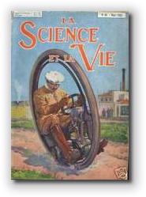
In the last few units, you've learned how to build and then test your own user-defined custom classes. In this unit, we'll take that a little further and you'll learn how to build more complex classes by extending and combining classes from the Java and ACM class libraries. That way, instead of constantly "reinventing the wheel", you'll be able to build on the work of the programmers who've gone before you.In this lesson you'll learn:
- how to extend one of the existing ACM "shape" classes
so that it works in an ACM
GraphicsProgram. - how to extend the
acm.Componentclass to create a new widget that will work with Java graphical applications and applets.
Back in Unit 9 we used the original applet version of a "bouncing
ball" program to develop, step-by-step, a bouncing-ball class;
one that contained constructors, accessors, and mutators, and that
"knew" how to bounce around the screen. The bouncing ball class that
we developed, though, doesn't work inside ACM graphics programs,
because it wasn't a member of the GObject family,
like all of the other ACM graphical objects.
In this lesson, we'll create two different kinds of components; one will work with ACM graphics programs and one will work with Java applets. Both of them will use inheritance. In the next lesson, you'll learn how to create new components using composition.
PolarBounce II
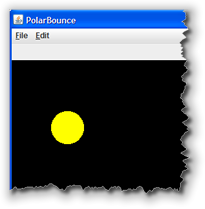
Let's start this lesson by returning to the bouncing ball program, PolarBounce, from the Lesson 8E: Introducing Animation. (You can download the original version by clicking the link in the previous paragraph.) We'll write several different versions of the application, gradually turning it into an object-oriented program that applies the principle of inheritance and composition.
By writing several different versions, you'll come to appreciate how inheritance saves you work by letting you reuse existing, already-debugged code.
The original version of PolarBounce basically did three things:
- It defined instance variables to represent the ball and it's current state on the screen.
- It initialized each of the instance variables inside
the
init()method. - Inside the
advanceOneFrame()method, it moved theGOvalobject and then checked to see if the ball collided with the side of the canvas.
Our original program also responded to mouse events to change its direction. That's not directly applicable to the current lesson, so we'll leave that for a little later.
The GBall Class
 For our first sequel to PolarBounce, instead of using a
For our first sequel to PolarBounce, instead of using a
GOval and separate fields or local variables
for the attributes of our bouncing ball, we'll
create our own class to represent our ball, just like
we did with the SimpleBall class in
Lesson 9A: Defining Fields.
Since you already know how to define a class, we won't go
through all of the different versions showing encapsulation
and constructors, like we did in Unit 9. Instead, we'll
start with a class that has all of the features of the
ball we ended up with in that unit:
ConstructorBall. The big difference is
that our ball will work with the ACM graphics classes,
(so we'll name it GBall), and
instead of building it from scratch, we'll be
using inheritance.
The Class "Skeleton"
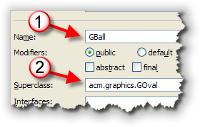
Create the GBall class exactly like you
create a regular Java class, except that when you
fill in the Eclipse Class Wizard screen, have it
extend the acm.graphics.GOval
class as shown here!
On the Wizard dialog, select the checkbox to generate comments
and then click Finish. Eclipse will generate the basic
starter code that looks something like that shown below:
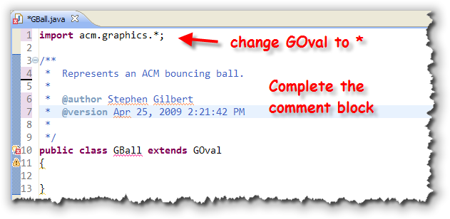
When Eclipse writes the starter file, it always uses specific import statements. I prefer the wildcard version, so I don't have to import the other classes in theacm.graphics package. To do that, just replace the
word GOval with an asterisk as shown in this screenshot.
In addition, you'll want to fill in the comment block as usual.
Why the Error?
Interestingly enough, the code written by the Eclipse Class Wizard
doesn't compile. That's kind of surprising, seeing that there's
so little of it.
To see what the problem is, move your cursor over the class name,
and you'll see:
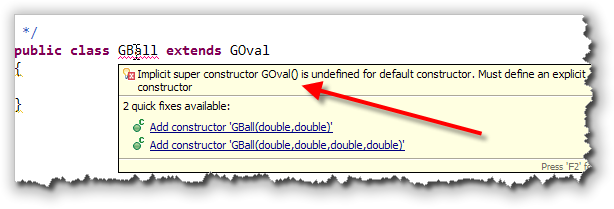
You'll recall from the last lesson, that when you don't define a constructor, Java will "write" one for you. However, when you extend a class, the default (invisible) constructor that Java supplies, always calls the default (or the no-arg) superclass constructor automatically. What this error message is saying is that
the GOval class doesn't have a default or no-arg
constructor. That means:
- we must write a constructor in the
GOvalclass; the default constructor cannot be made to work at all. - our constructor must explicitly invoke one of the
GOvalconstructors.
Although you're given two "Quick Fix" options here,
neither one of them is really what we want is the ability to
create a ball with a given radius, located at a particular
point on the screen, and filled with a particular color.
These are the same options that we used for the
ConstructorBall working constructor in
Unit 9.
So, let's decide on what data attributes we need and then write a working constructor to satisfy the Eclipse compiler. Instead of working from instance variables to constructor, like we did back in Unit 9, this time we'll work from the constructor backwards.
The Working Constructor
For our working constructor (as I already mentioned) we want to supply three parameters:
- a
doublefor the ball's radius - a
Pointfor the ball's location - a
Colorfor the ball's filled color
These are the same three parameters we used for the ConstructorBall
working constructor. Here's what a first draft of that looks like:
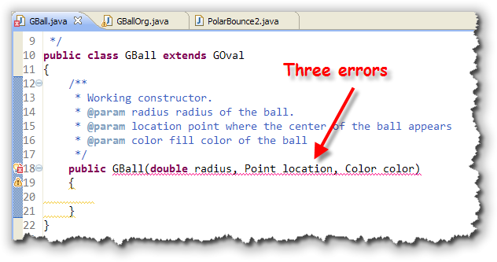
Now, instead of only one error, we have three!. Fortunately, two of them are pretty easy to fix. Your program doesn't recognize thePoint
or Color classes; fix this by adding import.java.awt.*;
to the top of the file, and your program will return to a single error.
To fix the original (and remaining) error, we need to explicitly invoke the
superclass constructor from the first line of our GBall
constructor. Our superclass constructor is GOval, but instead of
using that, we use the word super(). You decide which
constructor to invoke by passing the appropriate parameters:
 From the documentation, I can see that there are two
From the documentation, I can see that there are two GOval
constructors to choose from. Neither of them exactly matches my
parameters (since I want the location parameter to
represent the center of the ball), but we can maniuplate
those parameters like this, passing the GOval constructor
the values that it expects:
 Notice that:
Notice that:
- the first two parameters expected by the
GOvalconstructor are the x,y coordinates of the upper-left corner of the object's bounding box. In our case, though,locationrepresents the center of the circle. Thus, to satisfyGOvalthe constructor subtractsradiusfrom thexandyfields of thelocationparameter. - the last two parameters to the
GOvalconstructor arewidthandheight. Since we're creating a perfecly round ball, we just multiplyradius * 2for both parameters.
Instance Variables
The ConstructorBall class had five instance variables:
radius, location, color,
dx and dy. Because our GBall
already contains a set of instance variables (which it inherited
from GOval), we don't need all of those variables.
In fact, all we need are the variables that track the ball's movement.
In ConstructorBall those were dx and
dy, but the PolarBounce program used
direction and distance instead. Let's
use the two variables from PolarBounce like this:
 Once we've done that, we can finish the working constructor by
making sure all of the attributes (whether represented by instance
variables or inherited variables) are initialized. Here's the
finish
Once we've done that, we can finish the working constructor by
making sure all of the attributes (whether represented by instance
variables or inherited variables) are initialized. Here's the
finish GBall working constructor:
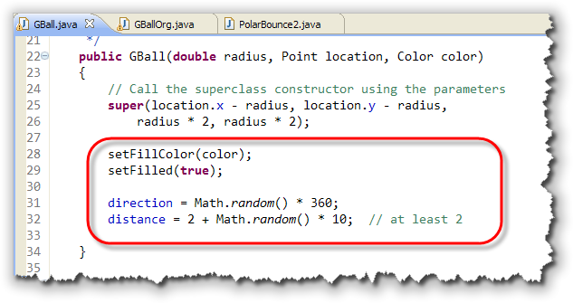
Notice that we need to use thesetFillColor() and setFilled()
methods to initialize the ball's color. The direction and
distance are each set to a random value, appropriate for
the meaning of the field.
Moving the Ball
To move the ball, we'll need to add a move() method, just
like we did previously. Since GBall inherits the
movePolar() method from GOval, we could use
the GBall in the same way that the GOval
was used inside the PolarBounce app.
Instead though, we want to have the ball "bounce itself" by
adding a move() method. Since the move()
method needs to "know" when it's collided with an edge of the
canvas, we'll pass a GCanvas object as a parameter
like this:
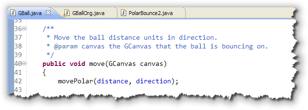
Inside themove() method, our ball uses the inherited
movePolar() method to adjust its location.
Of course, without any other changes, the ball will continue in the
same direction for infinity. So, just as we did before, after each
move we need to check to make sure that we're still on the playing
field, and, if not, adjust the direction appropriately
like this:
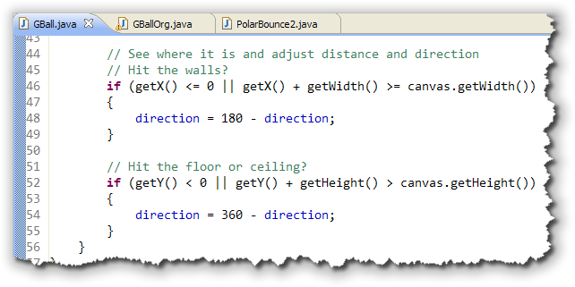
Trying it Out
To try it out, I've written a second application,
PolarBounce2 that
uses an array of GBall objects and starts them
all bouncing at once. Click the link in the previous sentence to download
it and run it on your local machine. You'll also need the completed
GBall class as well,
of course.
Here's the code from PolarBounce2 that creates each of
the GBalls in the array named bouncers:
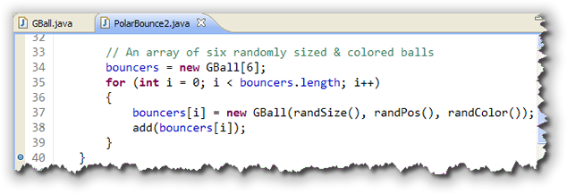
The three methods used when constructing theGBall
objects—randSize(), randPos(), and
randColor()—are private helper methods
defined in the PolarBounce2 class to make the
code a little simpler.
To move the balls around, you can use the "new style" for
loop to retrieve every element in the bouncers array
and call its move() method like this:
 Since each
Since each GBall in the array is created with a
separate random color, location and trajectory, they all bounce
at different speeds, as you can see from this picture:
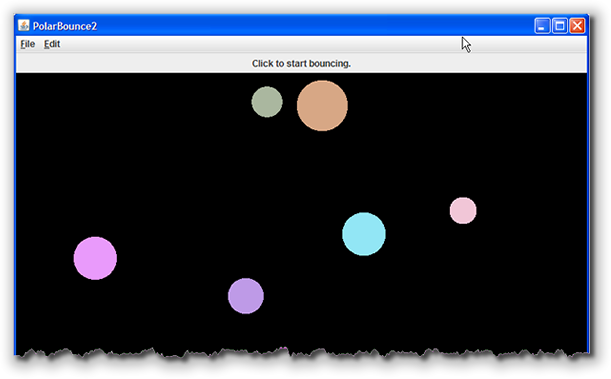
Of course, it looks more impressive if you run it. To do that, you can just download the files from the links in this lesson, or, you can run the PolarBounce2 applet in a separate window by clicking the link in this sentence.Inheritance and the Widget Classes
While the GBall class fits into the ACM graphics
family, how would we create a class that works with Java's
component hierarchy? Let's create a second class using
inheritance that works with Java's built-in buttons and labels.
The class that we'll create, the Dot will inherit
all of the methods and fields from the awt.Component
class, so it will work with other AWT and JFC components.
As always, you'll learn more if you break out the keyboard and
compiler, and type along.
Canvas and Component
For this project, however, you're going to be creating two new classes.
- One class,
TestDotswill extend theAppletclass. You'll use this class as a "test-bed" or "test-harness" for your new widget class. - Your second class,
Dot, will extend one of the built-in classes, the class namedComponent.
When you extend the Component class to create
"lightweight" components, your components can contain
transparent regions, so you can create round or irregularly
shaped components. Our Dot objects will be circular,
so the Component class is just what we need.
Step 1: The Test Harness
Start up your Eclipse, and create a new Java class. Whenever I have to create a new "standalone" class, I always create a test-harness first. We'll follow that here. Instead of starting with the Dot class, we'll create a program that uses the Dot class.
Use java.applet.Applet as the base class, and
then use the code shown here:
 Notice that this is a simple applet that works like this:
Notice that this is a simple applet that works like this:
-
To start out, I've set the background to yellow, and the
layout manager to null. This will make it easier to check our
sizing, positioning, and painting methods, when create the
Dotclass. I've also created a random number generator, and two local variables,widthandheightthat I'll use to position each of myDotobjects, later in the program. - The loop at the end of the
init()method repeats ten times, and each time through, it creates aDotobject, using the default constructor. - Because our
DotisAComponentobject, we can use theComponentclassadd()method to add eachDotto the applet. - Because every
DotisAComponent, we can also use the inheritedsetLocation()andsetForeground()methods, with out doing any extra work in theDotclass. Like all inherited methods, we get the extra functionality, "for free". - Finally, we can add new functionality. The
Componentclass knows nothing about a radius, but we'll give ourDotclass a specializedsetRadius()method, which we'll call from line 40.
Now, because the Dot class does not yet exist, your code
will not compile at this point. You can download
TestDots.java by clicking the hyperlink in this
sentence.
Step 2 : The New Class
Now, create a new Java class called
Dot.java,
and add the new class definition shown here:
 Note the following things about this code:
Note the following things about this code:
- We only import
java.awtnotjava.appletlike we've done for our applets. The new class then extendsComponent, notApplet - There is an instance variable,
radius, which we set to a default value of 10. We also added a mutator method,setRadius(), which allows us to change the value of the radius. - Finally, there is a
paint()method, just like those you've used in your applets, that draws the bounds of the dot, based on its size.
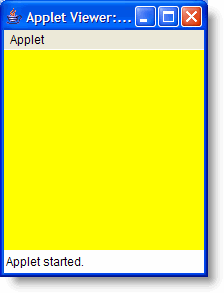
Compile and Run
Once you've completed this second file, save both TestDots.java and Dots.java. Both files should compile without problems, and then run TestDots as an applet.
What do you see? Why, do you suppose?
The Dot class is fairly Spartan; it
doesn't look like there's a lot of room for something to
go wrong, but even the simple paint() method doesn't
appear to be working. Note, though, that even though your
dots appear "invisible", the Dot class actually
"knows" how to do quite a few things, despite the inauspicious
start. Notice that you didn't get any error messages with
the add(), setLocation, or
setForeground() messages.
Let's tackle the "invisibility" problem first.
How Big is that Dot?
Even though we set the radius of each of our Dot objects,
we really haven't considered how our Dot class "fits in"
with all of the other components. When you extend a class, you need
to carefully examine each of your ancestor classes and see how your
new fields and methods affect them.
In this case, the problem is quite simple; we're changing our Dot's
radius, be we aren't passing that information on to the rest of
the family. We can fix that by calling the inherited setSize()
and setPreferredSize() methods whenever we change our
object's radius.
Here's the modified setRadius() method:
 and here's a constructor, which makes sure our objects start out
life with the correct size as well. In addition, I've set the default
foreground and background color of each
and here's a constructor, which makes sure our objects start out
life with the correct size as well. In addition, I've set the default
foreground and background color of each Dot also.

You can examine the modified source code for this version of
Dot.java by clicking the link in this sentence.
Save the code and run TestDots again, and
you'll see that this time, the dots are spread out
across your applet, just like the picture shown
below:
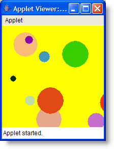
Lessons Learned
There are three lessons we can draw from this program:
- We can create
Dotvariables and objects just like we can createJLabelorJButtonvariables and objects:JLabel myLabel = new JLabel("Hi Mom"); // OK
To add more functionality, we could add more constructors or methods.
Dot aDot = new Dot(); // also OK - A
Dotobject isAComponent, just like the built-in components that come with the Java Class Libraries. We can add them to the surface of our applets just like we can addJButtonorJLabelobjects:this.add(myLabel);
this.add(aDot); - We can automatically use the
Componentmethods,setForeground()andsetLocation()without doing any extra work at all. TheDotclass inherits them "for free."myLabel.setBackground(Color.red);
aDot.setBackground(Color.red);
Of course, unlike JButton objects,
the Dot is a pretty poor Widget. Sure, we can change
its size and color, but, like the Label class, it more or
less just sits there. Later this week you'll learn how to
make it respond to events.
Coming Up ...
In this lesson you learned hwo to create
new components that work with the ACM
graphics framework and with the Java Class Libraries.
You extended the GOval class to create
a GBall and extended the Component
class to create a Dot.
In the next lesson, we'll look at some of the problems of inheritance, along with their solutions. You'll learn how to create new classes by combining existing classes (a process called composition). You'll also learn how to define new single-value enumerated types.